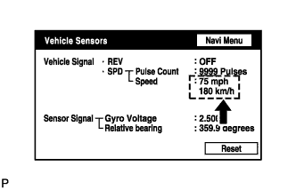

DTC 58-43 SPD Signal Error |
DTC 80-43 SPD Signal Error |
| DTC No. | DTC Detection Condition | Trouble Area |
| 58-43 | A difference between the GPS speed and SPD pulse is detected. |
|
| 80-43 | A difference between the GPS speed and SPD pulse is detected. |
| 1.CHECK VEHICLE SENSOR (NAVIGATION CHECK MODE) |
 |
Enter the "Navigation Check" mode and select "Vehicle Sensors" (Click here).
While driving the vehicle, compare the "SPD" indicator to the reading on the speedometer. Check if these readings are almost equal.
|
| ||||
| OK | ||
| ||
| 2.PROCEED TO NEXT CIRCUIT INSPECTION SHOWN IN PROBLEM SYMPTOMS TABLE |
Refer to "Speed signal does not change in the navigation check mode" in the problem symptoms table (Click here).
| NEXT | ||
| ||